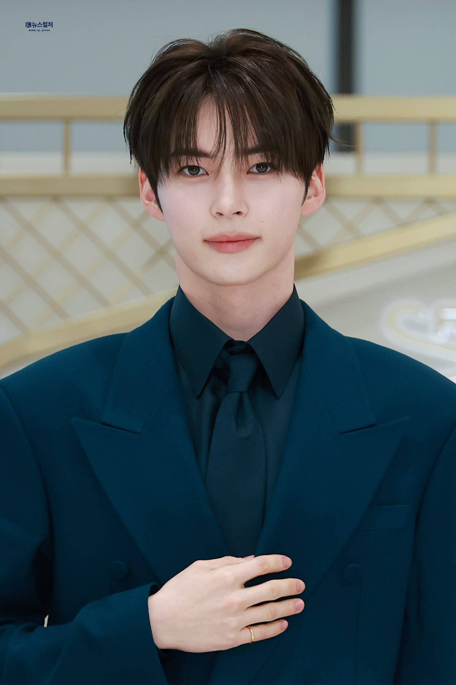
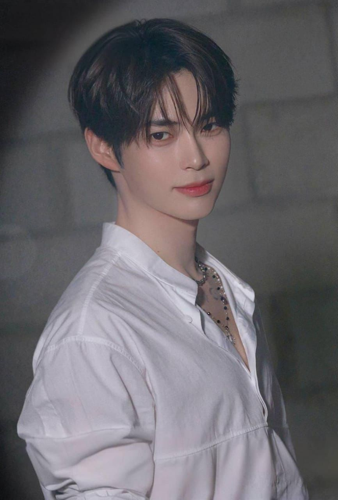
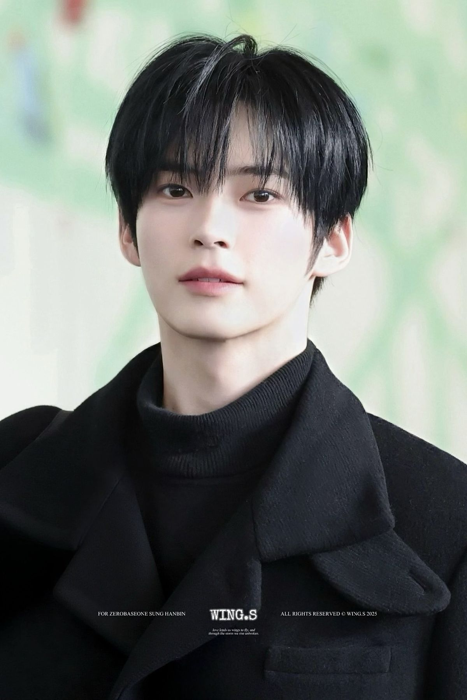

Sung Han Bin is a South Korean singer, dancer, and entertainer who gained international popularity through the survival show Boys Planet. He is best known as the leader and center of the K-pop boy group ZEROBASEONE (ZB1). Before debuting, Han Bin trained extensively in dance and performance, developing strong stage presence and leadership skills. His talent, hardworking attitude, and friendly personality helped him earn a large fanbase around the world. During Boys Planet, he consistently ranked among the top contestants and impressed viewers with his vocals, dancing, and professionalism. After debuting with ZEROBASEONE, he continued to showcase his abilities through music performances, variety shows, and public events. Many fans admire him for his dedication, positive attitude, and ability to inspire others through his journey in the entertainment industry.